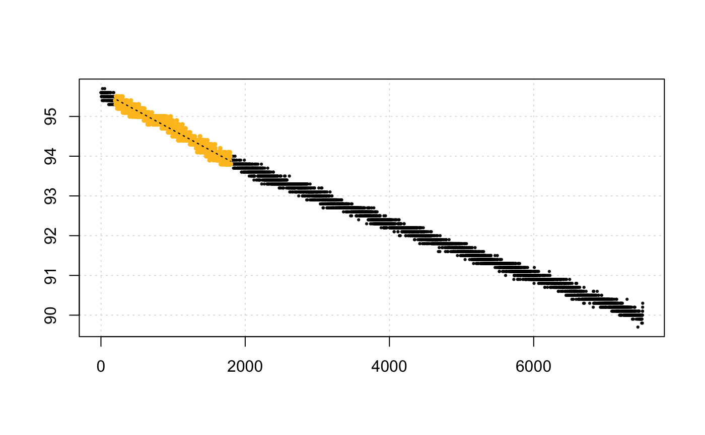

This is a conversion function. It can convert a dimensionless unit of rate,
derived from calc_rate, calc_rate.ft, calc_rate.bg, auto_rate, or
adjust_rate into volume-adjusted (i.e. to the container), VO2 or
mass-specific (i.e. to the specimen mass), MO2 rate.
convert_rate( x, o2.unit = NULL, time.unit = NULL, output.unit = NULL, volume = NULL, mass = NULL, S = NULL, t = NULL, P = NULL )
| x | numeric, or objects of class |
|---|---|
| o2.unit | string. The dissolved oxygen unit of the data used to
determine rate. Check |
| time.unit | string. The time unit of the data used to determine rate.
Check |
| output.unit | string. The output unit to convert rate to. Check
|
| volume | numeric. Volume in litres. This is the volume of fluid in the respirometry chamber, not the specimen volume. |
| mass | numeric. Mass/weight in kg. This is the mass of the specimen if you wish to calculate mass-specific rates. |
| S | numeric. Salinity (ppt). Defaults to NULL. Used only in conversion
of some units. See |
| t | numeric. Temperature(°C). Defaults to NULL. Used only in conversion
of some units. See |
| P | numeric. Pressure (bar). Defaults to NULL. Used only in conversion
of some units. If left NULL, default value of 1.013253 is applied in
conversions. See |
A list object.
Unless other values are specifically called as x, the function converts the
primary $rate from calc_rate and auto_rate objects, the $corrected
rate from adjust_rate objects, and the $mean rate from calc_rate.ft and
calc_rate.bg objects. Values or vectors of other rates within these obects
can be converted by calling them as x using $.
Note, for rates from flowthrough experiments, the volume and time inputs
should be set with reference to the flow rate in L per unit time. E.g. for
a flow rate in L/s volume = 1, time = "s". With these rates volume does
NOT represent the volume of the respirometer, and time does NOT
represent the resolution of the original data."
The function uses an internal database and a fuzzy string matching algorithm to accept various unit formatting styles.
For example, 'mg/l', 'mg/L', 'mgL-1', 'mg l-1', 'mg.l-1' are all the same.
Use unit_args() to view a list of usable unit strings.
Output units (output.unit) must be in the sequence O2-Time (e.g. mg/h,
mg-h) for absolute rates, and for mass-specific rates O2-Time-Mass (e.g.
mg/h/kg).
Some units also require temperature (t), salinity (S), and atmospheric
pressure (P) to be specified. See unit_args() for details. For freshwater
experiments, salinity should be set to zero (i.e. S = 0).
# Manually enter values convert_rate(7.5, o2.unit = 'mg/l', time.unit = 's', output.unit = 'mg/min/kg', volume = 1.2, mass = 0.5)#> #> # print.convert_rate # ------------------ #> Rank 1 of 1 rates: #> #> Input: #> [1] 7.5 #> [1] "mg/L" "sec" #> Converted: #> [1] 1080 #> [1] "mgO2/min/kg" #> #> To see full results use summary(). #> -----------------------------------------# Use example data data("sardine.rd") x <- calc_rate(sardine.rd, from = 200, to = 1800, by = "time")#> #> # plot.calc_rate # ---------------------- #> calc_rate: Plotting rate from position 1 of 1 ...#> -----------------------------------------convert_rate(x, o2.unit = '%', time.unit = 's', output.unit = 'mg/h/g', volume = 12.3, mass = 0.05, S =35, t = 15, P = 1.013)#>#> Error in verify_units(o2.unit, "o2"): verify_units: unit "%" has been deprecated. Please use "%Air" or "%O2" instead. See unit_args().